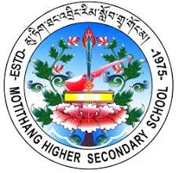
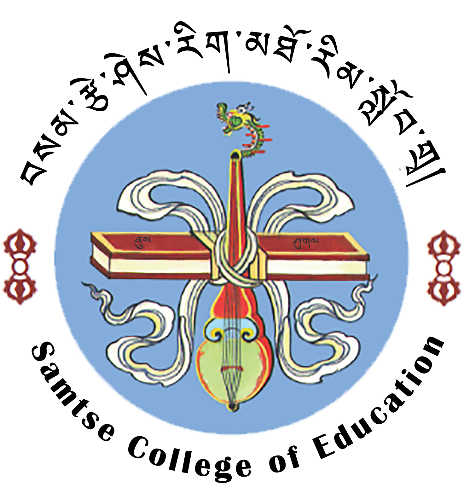

MY LEARNING JOURNEY
Education Timeline

Stage 1: Changangkha Middle Secondary School 2010 – 2020
Completed elementary and middle school; built strong foundations in academics and activities.
Stage 2: Motithang Higher Secondary School 2021 – 2022
Higher Secondary (Arts stream): communication, creativity, and critical thinking.


Stage 3: Samtse College of Education 2023 – 2027
B.Ed in ICT — integrating technology into teaching; building simple, accessible learning resources.